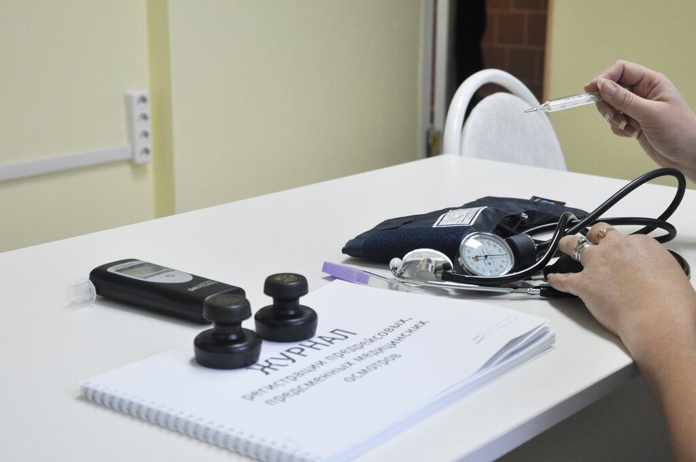

Постановлением Правительства РФ от 27.02.2021 г. № 275 утверждены изменения, которые вносятся в постановление Правительства РФ от 03.04.2020 г. № 440 «О продлении действия разрешений и иных особенностях в отношении разрешительной деятельности в 2020 и 2021 годах».
Если срок действия диагностических карт заканчивается в период с 1 февраля по 30 сентября 2021 года, то их срок автоматически продляется на 6 месяцев, но не менее чем до 1 октября.
Не требуется прохождение ТО в первые 4 года, включая год выпуска
Легковые автомобили, грузовые автомобили, с разрешенной максимальной массой до 3,5 тонн - Не требуется прохождение ТО в первые 4 года, включая год выпуска
Прицепы и полуприцепы, мототранспортные средства - Не требуется прохождение ТО в первые 4 года, включая год выпуска
Мототранспортные средства, легковые автомобили, грузовые автомобили (с разрешенной максимальной массой до 3,5 т) с года выпуска которых прошло от четырех до десяти лет - Один раз в два года
Можно ли купить ОСАГО без техосмотра?
С 1 февраля 2021 г. узаконить тюнинг авто стало труднее